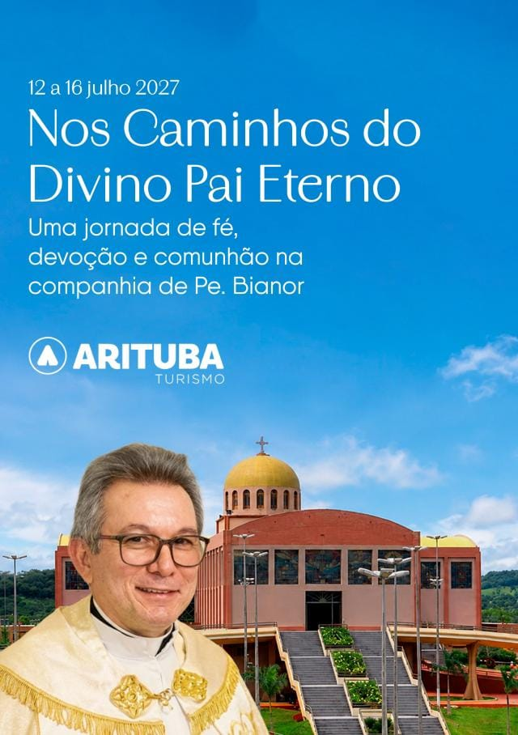
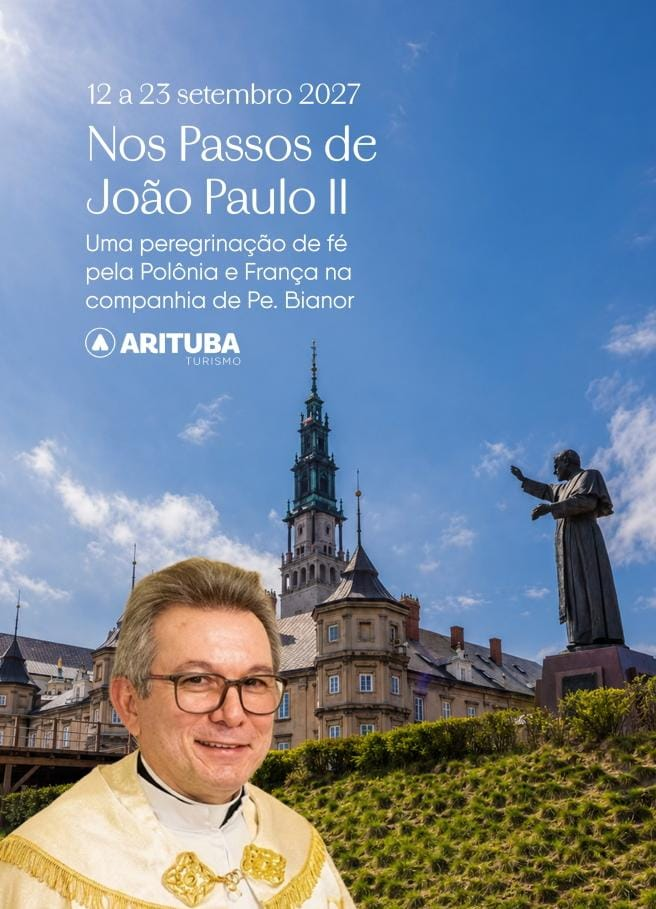
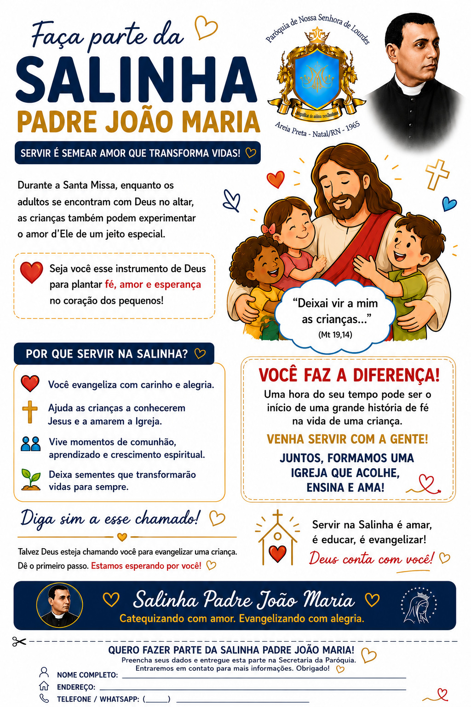
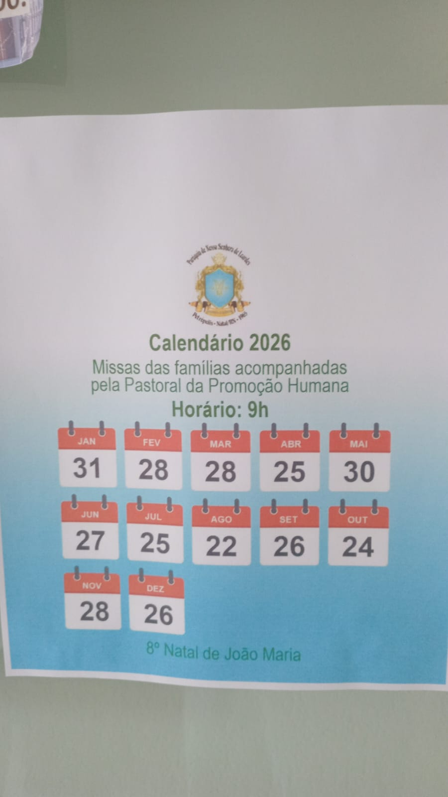

Atualização da semana
Comunicações semanais
Estes são os avisos que podem ser trocados toda semana. Para atualizar depois, basta editar esta página e substituir os textos ou imagens dos comunicados.
 Paróquia Nossa Senhora de Lourdes
Areia Preta - Natal/RN
Paróquia Nossa Senhora de Lourdes
Areia Preta - Natal/RN
Avisos da comunidade
Espaço para acompanhar inscrições abertas, comunicações semanais e avisos fixos da Paróquia Nossa Senhora de Lourdes.

Atualização da semana
Estes são os avisos que podem ser trocados toda semana. Para atualizar depois, basta editar esta página e substituir os textos ou imagens dos comunicados.
Peregrinações 2027
Com carinho, Pe. Bianor apresenta duas propostas de peregrinação para 2027, organizadas pela Arituba Turismo.
12 a 16 de julho de 2027
Uma oportunidade de peregrinar ao Santuário do Divino Pai Eterno, em Goiás, vivendo momentos de fé, oração e espiritualidade na companhia de Pe. Bianor.

12 a 23 de setembro de 2027
Uma experiência de fé, espiritualidade, cultura e história pela França e Polônia na companhia de Pe. Bianor.

Informações e reservas
Os roteiros completos e as formas de pagamento estão disponíveis com Sandra, da Arituba Turismo. Quem preferir também pode falar diretamente com Pe. Bianor pelo privado.
Pe. Bianor acompanhará os grupos durante as peregrinações, oferecendo assistência religiosa e espiritual.
Com carinho, Pe. Bianor.
Inscrições abertas
Estão abertas as inscrições para o Segue-me, destinado a jovens de 16 a 24 anos.
Inscrições abertas
Faça parte da Salinha Padre João Maria e ajude as crianças a conhecerem Jesus e a viverem a fé com carinho, alegria e acolhimento.

Até 30 de junho
Inscrições abertas para nova turma de coroinhas. Podem participar crianças e adolescentes de 7 a 17 anos.
Inscrições abertas
Inscrições abertas para novos leitores da Paróquia Nossa Senhora de Lourdes.
Inscrições abertas
Inscrições para crianças na catequese de Primeira Eucaristia e para jovens e adultos na Crisma.
Programação permanente
Atividades recorrentes e informações permanentes da comunidade paroquial.
Todos os sábados
Horário: 16h.
Local: gruta de Nossa Senhora.
Todas as segundas
Horário: 19h.
Local: Matriz Nossa Senhora de Lourdes.
Todas as quintas-feiras
Horário: 16h.
Bênção do Santíssimo logo após.
Calendário 2026
Calendário das missas das famílias acompanhadas pela Pastoral da Promoção Humana.

Aguardando imagem
Este espaço ficou reservado para as informações sobre o Batismo. A imagem do Batismo não chegou junto com os arquivos enviados nesta conversa.